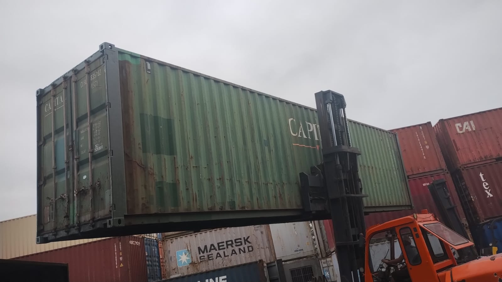

ALMA CONTAINERS
Bem-vindo à Alma Containers, sua parceira confiável no fornecimento de soluções de armazenamento versáteis e duráveis. Somos uma empresa líder no mercado, especializada no aluguel e venda de containers de 20 e 40 pés, atendendo às necessidades de uma ampla gama de setores industriais e comerciais.
O que são containers ?
Os containers são estruturas de transporte e armazenamento, geralmente feitas de aço resistente, projetadas para transportar cargas de forma eficiente e segura em navios, trens, caminhões e outras modalidades de transporte.
Confira alguns de nossos modelos e preços em nosso catálogo abaixo!
Catálogo
Alguns de nossos trabalhos e operações
Por que comprar ou alugar um Container de Carga Seca ?
Comprando você tem alguns benefícios, como :
- Propriedade Permanente: Ao comprar um container, o cliente se torna o proprietário permanente do mesmo, tendo total controle sobre seu uso e personalização.
- Investimento de Longo Prazo: Para empresas que necessitam de armazenamento regular ou espaço adicional, a compra de um container pode ser um investimento de longo prazo mais econômico do que o aluguel a longo prazo.
- Personalização: Comprando um container, o cliente tem a liberdade de personalizá-lo de acordo com suas necessidades específicas, seja para uso comercial, residencial ou outros fins.
- Flexibilidade: Proprietários de containers podem usá-los conforme desejarem, sem restrições de tempo ou contrato.
- Uso Contínuo: Ao comprar um container, o cliente pode utilizá-lo de forma contínua, sem se preocupar com prazos de aluguel ou renovações.
Já alugando você tem esses tipos de benefícios:
- Custo Inicial Reduzido: Alugar um container requer um investimento inicial menor do que comprar, sendo uma opção mais acessível para clientes que não desejam um compromisso financeiro significativo.
- Flexibilidade de Prazo: Os clientes podem alugar um container pelo tempo que precisarem, seja por alguns meses ou anos, sem a necessidade de um compromisso de longo prazo.
- Manutenção Inclusa: Muitas empresas de aluguel oferecem serviços de manutenção e reparo como parte do pacote de aluguel, eliminando a preocupação do cliente com custos adicionais de manutenção.
- Atualização Facilitada: Alugar um container permite aos clientes atualizar para um modelo maior, mais adequado às suas necessidades, sem o ônus de ter que vender ou se desfazer do container antigo.
- Teste de Viabilidade: Para empresas que estão considerando a utilização de containers de carga seca, alugar permite um período de teste para avaliar a viabilidade do uso antes de comprometer-se com a compra.
Confira mais informações sobre nossos modelos e preços disponíveis em nosso catálogo
Catálogo
Se interessou e quer saber mais ?
Nos chame para uma apresentação de nossos serviços sem compromisso!